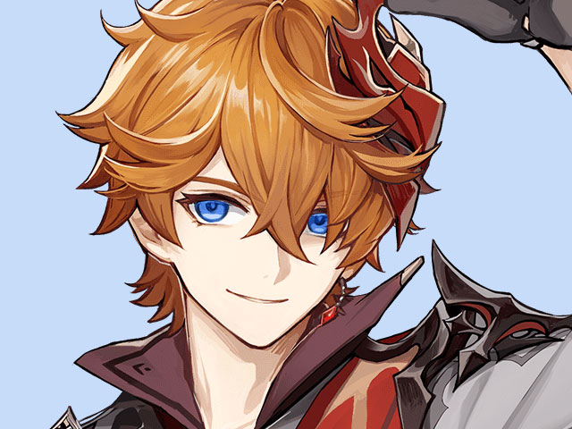
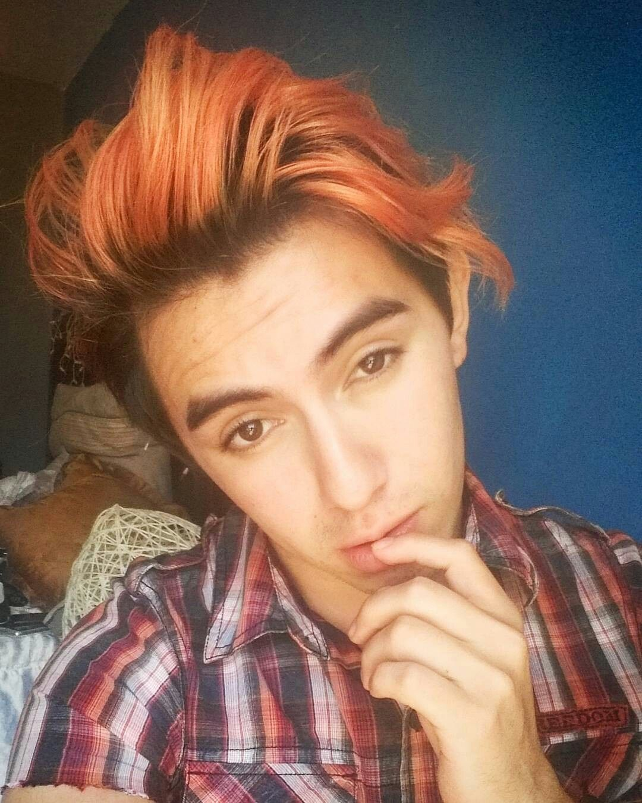
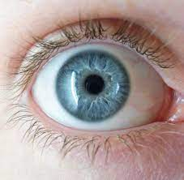
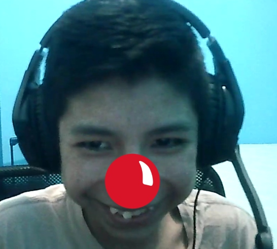
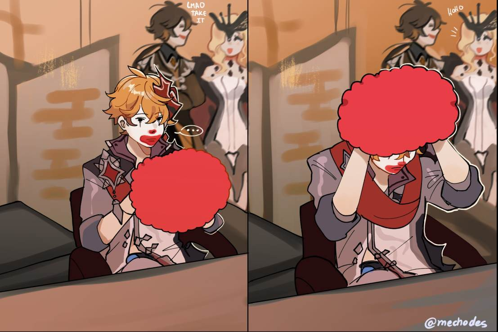

Investigacion Del Core
Cientifico De Anomalias
Investigacion Del Core
Cientifico De Anomalias
Frank Sosa Chate(Julio), Es tartaglia?

La verdad es que julio es idéntico a tartaglia, los dos son de cabello naranja y de ojos azules
 
Aparte los dos son payasos y no decir que si me encuentro en la calle los golpeo
